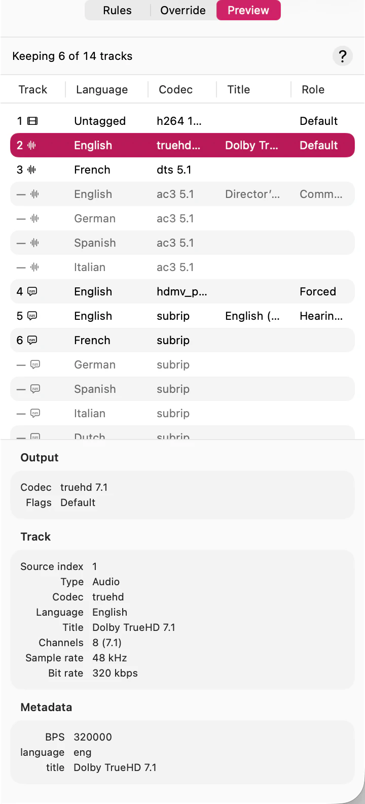

Before you commit a queue to your rules, it’s worth seeing what one file actually comes to. The Preview tab is that view: every track the run will write, in the order the output will carry them, and every track it’s dropping.

Dimmed rows, and the ones with a dash where a number would be, are the tracks being dropped — they’re listed so you can see what you’re losing, not because they’ll be in the file.
Nothing here can be changed. It’s the consequence of your rules and any override you’ve set; to change it, see Override the track plan for one file.
Track is where the track lands in the output, numbered from one, with an icon for what kind it is. A dash means it isn’t in the output at all.
Codec is the format the output will hold the track in, and the shape of what it
carries — ac3 5.1, h264 1080p. An arrow (→ aac) means the track
is being converted, not copied.
Role is what the track is for, which is usually what decides whether you want it:
These come from how the file was tagged, so a mislabelled track shows the label it carries rather than what it really is. That’s exactly the case the Override tab exists for.
Default is the one role SubTrack assigns rather than reads. Your language order decides which audio track the slimmed file leads with, so the first audio track in the output is marked default and the others aren’t — whatever the source said. Every other role is carried through untouched.
The columns show what distinguishes one track from another and no more. Select any row and the pane below it lists everything known about that track, in three groups:
Drag the divider to give either the list or the detail more room, and select any value to copy it.
Both the list and the detail scroll. A remux with a dozen subtitle tracks won’t fit a narrow inspector, and neither will the metadata some encoders write.
If you re-scan a file (Queue ▸ Re-scan Selected) the tab says so while it reads the tracks again, and the plan on screen is the old one until it finishes.